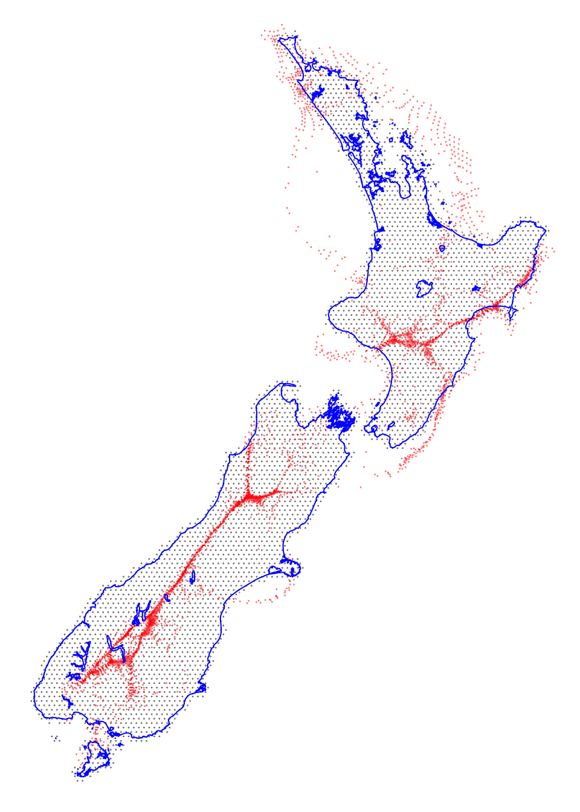
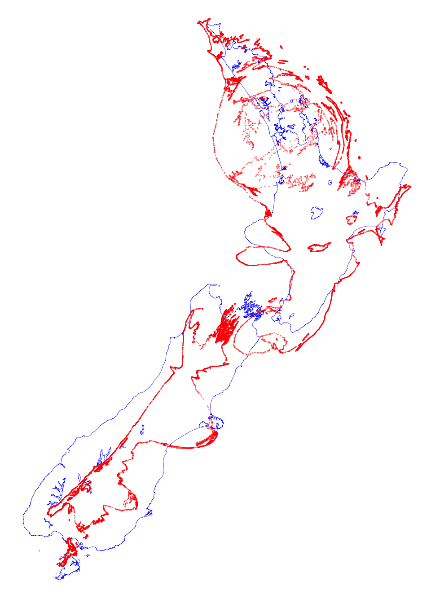

Code
library(sf)
library(dplyr)
library(tmap)
library(akima)
library(knitr)
nz <- st_read("nz.gpkg")
hex_pts <- st_read("hex-centres.gpkg")
hex_pts_carto <- st_read("hex-centres-carto.gpkg") %>%
st_set_crs(st_crs(hex_pts))The cartograms in Figure 2.2 were made using ScapeToad (linked here). They are examples of Gastner-Newman cartograms, popularised by Danny Dorling at the World Mapper website. I’m not really in love with this style of cartogram, although I do appreciate the impact they’ve had in making the notion of cartograms more widely known. Furthermore, there aren’t many other cartogram styles that have been automated even to the limited extent that this one has.
The broader point, made several times in the book is the arbitrary nature of the preference for geodetic accuracy in map projections.It would be preferable if standard geospatial platforms could support any mapping of geocentric (latitude-longitude) coordinates to other two dimensional coordinate systems, as defined by end-users.
In fact, the machinery to do so exists in most GIS in the tools used to georeference imagery. However, these tools typically only enable warping inputs so that they conform with already known coordinate reference systems, although the underlying mathematics of mapping points between two coordinate systems could in principle allow user-defined coordinates, with potential benefits for the exploration of multiple geographies.
An example of this is shown below, again an Aotearoa New Zealand population cartogram.

However, this example however, was produced in an unusual way. I first used ScapeToad to make a population-based cartogram, but at the same time transformed a set of hex-grid points. This gives me a set of mappings of coordinate pairs in a geodetic coordinate space (in this case New Zealand Transverse Mercator NZTM), and the corresponding coordinate locations in ‘population cartogram space’. Using these it is possible to interpolate any points in NZTM coordinates into the cartogram coordinate space. The mapping is the same information that is provided by ScapeToad’s transformation grid (pictured in Figure 2.3 in the book), but with more detail.
Here’s some R code that does all this in a very rough and ready way using a triangulation-based interpolator from the akima package. I say more at the end of the page about embedding this approach in GIS.
First we read in a New Zealand coastline polygon, which we are going to transform, hex grid centres in NZTM, and the same hex grid centres transformed by ScapeToad based on a population cartogram.
library(sf)
library(dplyr)
library(tmap)
library(akima)
library(knitr)
nz <- st_read("nz.gpkg")
hex_pts <- st_read("hex-centres.gpkg")
hex_pts_carto <- st_read("hex-centres-carto.gpkg") %>%
st_set_crs(st_crs(hex_pts))And here is a map of the three layers.
tm_shape(hex_pts) +
tm_dots(size = 0.0005) +
tm_shape(hex_pts_carto) +
tm_dots(col = "red", size = 0.0005) +
tm_shape(nz) +
tm_borders(col = "blue") +
tm_layout(frame = FALSE)
The black dots are the hex grid centres in NZTM, and the red dots are where they ended up when transformed according to the population cartogram.
Next we build a ‘transformation’ table with the \((x_1, y_1)\) and \((x_2, y_2)\) pairs of corresponding coordinate pairs in the NZTM and population cartogram spaces.
x1y1 <- hex_pts %>%
st_coordinates() %>%
as_tibble() %>%
select(1:2) %>%
rename(x1 = X, y1 = Y)
x2y2 <- hex_pts_carto %>%
st_coordinates() %>%
as_tibble() %>%
select(1:2) %>%
rename(x2 = X, y2 = Y)
transform <- bind_cols(x1y1, x2y2)Here is what that looks like:
kable(head(transform), format = "html")| x1 | y1 | x2 | y2 |
|---|---|---|---|
| 1084975 | 4896329 | 1145278 | 4920257 |
| 1084975 | 4913650 | 1148380 | 4929528 |
| 1089975 | 4887669 | 1150074 | 4918234 |
| 1089975 | 4904989 | 1156816 | 4927015 |
| 1089975 | 4922310 | 1157860 | 4934749 |
| 1094975 | 4879009 | 1151653 | 4914431 |
The simple interpolator we are using can only transform points, so we convert the coastline data to points.
nz_coast_pts <- nz %>%
st_cast("MULTIPOINT") %>%
st_coordinates() %>%
as_tibble() %>%
select(1:2) %>%
rename(x = X, y = Y)Each coordinate (i.e. \(x\) and \(y\)) is separately interpolated. The interpolator is provided with the \((x, y, z)\) information from the transform dataframe which for the \(x\) coordinate are \((x_1, y_1, x_2)\) and for the \(y\) coordinate \((x_1, y_1, y_2)\). What is done with these data is that the input \((x_1, y_1)\) coordinates are triangulated giving in effect a triangulated irregular network surface for each coordinate in the transformed population cartogram space. Any point inside a triangle can have its coordinate in the transformed space interpolated from the known coordinate values at the vertices of the triangle.
Anyway, using akima::interpp here is how we can do that.
nz_coast_carto_x <- interpp(x = transform$x1, y = transform$y1, z = transform$x2,
xo = nz_coast_pts$x, yo = nz_coast_pts$y)$z
nz_coast_carto_y <- interpp(x = transform$x1, y = transform$y1, z = transform$y2,
xo = nz_coast_pts$x, yo = nz_coast_pts$y)$zThen we make these up into a spatial dataframe, and map them. The original coast outline is in blue, the transformed coast points in red.
nz_coast_carto <- data.frame(x = nz_coast_carto_x,
y = nz_coast_carto_y) %>%
st_as_sf(coords = c("x", "y"), crs = 2193)
tm_shape(nz) +
tm_borders(col = "blue", lwd = 0.35) +
tm_shape(nz_coast_carto) +
tm_dots(col = "red", size = 0.005) +
tm_layout(frame = FALSE)
Clearly the above example is not entirely satisfactory. It can only transform points and a lot of additional code would be required to add that capability. In principle however, it is not difficult to include this capability in GIS or other standard platforms, using capabilities already present in the proj tools for coordinate transformation that underpin today’s geospatial software. This is something Luke Bergmann and I have been exploring for a while, see:
Bergmann LR and D O’Sullivan. 2017. Computing with many spaces: Generalizing projections for the digital geohumanities and GIScience. In Proceedings of the 1st ACM SIGSPATIAL Workshop on Geospatial Humanities, 31–38. ACM Press.
Specifically proj‘s tinshift transformation provides for exactly the transformation carried out above. It requires a JSON file with the triangulation information precomputed. That’s how I made the example at the top of this page. With ’tinshift’ JSON file, the following GDAL command line will carry out the required transformation between NZTM and a population cartogram based on 2018 census data:
ogr2ogr -skipfailures -ct "+proj=pipeline +step +proj=axisswap +order=2,1 +step +proj=tinshift +file=tinshift.json +step +proj=axisswap +order=2,1" <output GPKG> <input GPKG>Unfortunately, for reasons we don’t fully understand the additional axisswap transformation is required, either side of the tinshift operation requiring a projection ‘pipeline’ to be used. The -skipfailures option prevents the program failing if a polygon becomes invalid as a result of the transformation.
Here’s a JSON file for the New Zealand population cartogram, if you want to try it for yourself.
This might not be the most elegant way to project any geospatial data into a cartogram space, but it is already available in existing tools!
# License (MIT)
#
# Copyright (c) 2023 David O'Sullivan
#
# Permission is hereby granted, free of charge, to any person
# obtaining a copy of this software and associated documentation
# files (the "Software"), to deal in the Software without restriction,
# including without limitation the rights to use, copy, modify, merge,
# publish, distribute, sublicense, and/or sell copies of the Software,
# and to permit persons to whom the Software is furnished to do so,
# subject to the following conditions:
#
# The above copyright notice and this permission notice shall be included
# in all copies or substantial portions of the Software.
#
# THE SOFTWARE IS PROVIDED "AS IS", WITHOUT WARRANTY OF ANY KIND, EXPRESS
# OR IMPLIED, INCLUDING BUT NOT LIMITED TO THE WARRANTIES OF MERCHANTABILITY,
# FITNESS FOR A PARTICULAR PURPOSE AND NONINFRINGEMENT. IN NO EVENT SHALL
# THE AUTHORS OR COPYRIGHT HOLDERS BE LIABLE FOR ANY CLAIM, DAMAGES OR OTHER
# LIABILITY, WHETHER IN AN ACTION OF CONTRACT, TORT OR OTHERWISE, ARISING
# FROM, OUT OF OR IN CONNECTION WITH THE SOFTWARE OR THE USE OR OTHER
# DEALINGS IN THE SOFTWARE.© 2023 David O’Sullivan